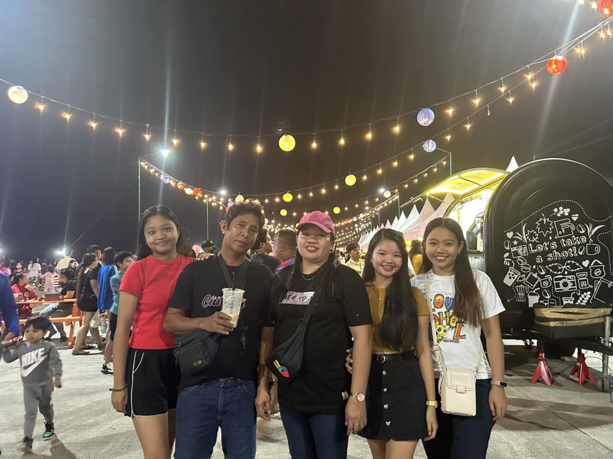
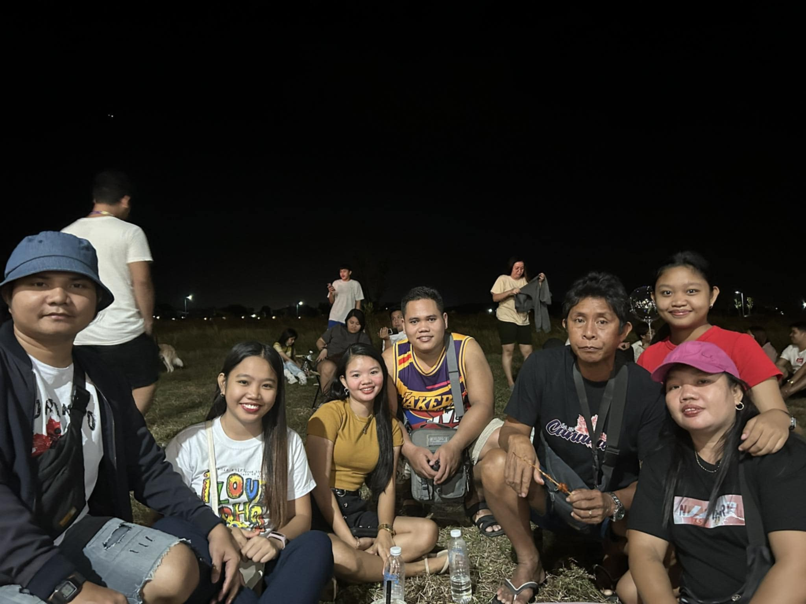
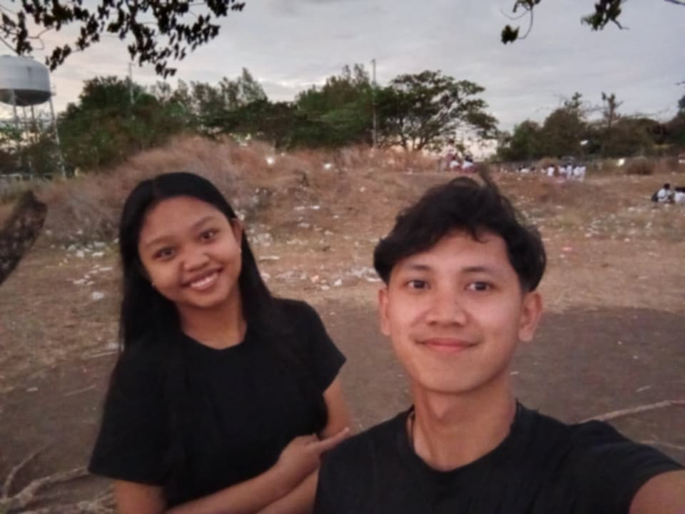
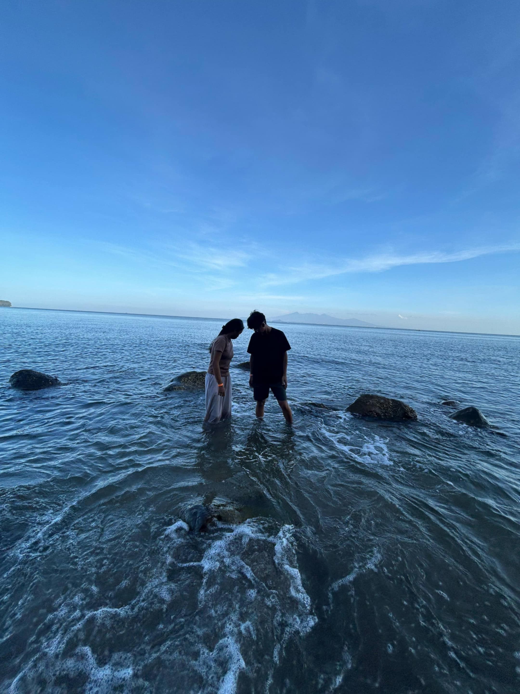

Foundation
Home is where I learned kindness, patience, and the importance of staying grounded.
JOYCE ANN D. FRANCISCO
BSIT 3 - 1
A calm little corner of the internet where you can explore my projects and get to know me better.
Family
Family is where my story begins. They are the first people who taught me love, support, and the quiet strength I carry with me every day.
Home is where I learned kindness, patience, and the importance of staying grounded.
Every memory with them reminds me how much warmth and comfort can live in simple moments.




School
Each chapter taught me something different, from curiosity and confidence to preparation for what comes next.
Myself
I was born on September 9, but my birth certificate says the 29th. My mother is Jovelyn Domingo and my father is Elmer Francisco. I love music, arts, and cooking.
My date of birth is a small mystery I carry with me every year, a story that always sparks curiosity.
Being the daughter of Jovelyn Domingo and Elmer Francisco has shaped the values I hold close.
Music, art, and cooking are the ways I express myself, find joy, and keep growing.
As an IT student, I have skills in web development (HTML, CSS, JavaScript), programming (Python, Java), database management, and problem-solving.
Journey
Every step of my journey has been guided by the Lord's hand. Through every challenge, every small victory, and every quiet moment of growth, I have felt His presence walking beside me.
I was born into a family that taught me early on that love is patient, and home is a safe place to grow. My mother, Jovelyn, and my father, Elmer, showed me through their own lives what it means to work hard, to care deeply, and to never give up. But I knew, even as a child, that there was something greater guiding us—a presence I couldn't name but could always feel.
Growing up, I moved through different seasons. Elementary school was a time of pure wonder—I learned that curiosity could open doors. Junior high taught me resilience when things got harder. Senior high showed me that preparation and intention matter. But through each transition, each moment of doubt, each small triumph, I felt God holding the pieces together. He was reminding me that I was never alone.
Then I discovered my passions. Music became a language for my soul. Art became a way to understand the world. Cooking became an act of love for the people I care about. These weren't accidents. I see now that God was showing me the ways I could express the gratitude and joy He had placed in my heart. He was preparing me to share my gifts with others.
The friends He brought into my life became more than companions—they became mirrors reflecting back the person I was becoming. My family, with all their imperfect love, became my anchor. Every person I've met, every book I've read, every moment of joy and every moment of pain—they were all threads in a tapestry only God could see completely.
Now I understand. I am not the author of my story—God is. I am simply learning to trust His pen, to walk confidently even when I can't see the full chapter ahead. Every step I make, He is there. Every decision I face, He guides me. Every dream I hold, He holds it with me. This is the most important truth I've learned: I am never walking alone. The Lord's presence isn't something I have to earn—it's simply there, constant and faithful, in every step I take.
And so my journey continues, not as a path I forge alone, but as a walk with the One who loves me most. Every tomorrow is an opportunity to trust Him more, to grow closer to Him, and to become a vessel through which His love can flow to others.
Projects
Each project represents a step in my journey of learning and growth, combining technical skills with creativity.

A functional calculator application built with clean interface and reliable computation. Demonstrates foundational programming logic and user-friendly design.

A wireframe design for a movie listing application. Focuses on information architecture and user experience layout planning.

A fully styled movie application with polished visuals and interactive elements. Transforms wireframe concepts into a beautiful, functional interface.

A comprehensive dashboard interface with data visualization and user management features. Built with modern web technologies for efficient data presentation.